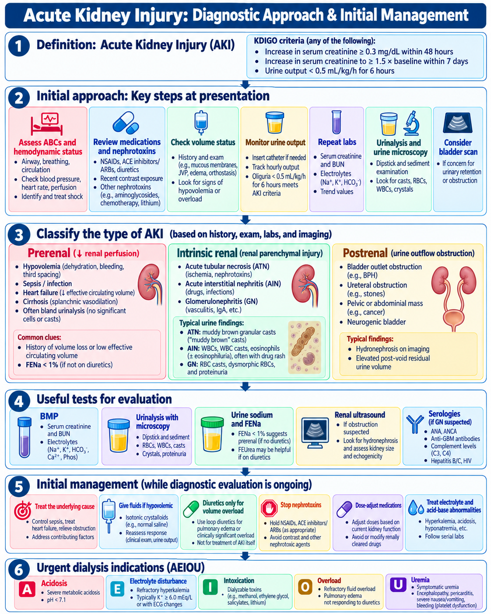
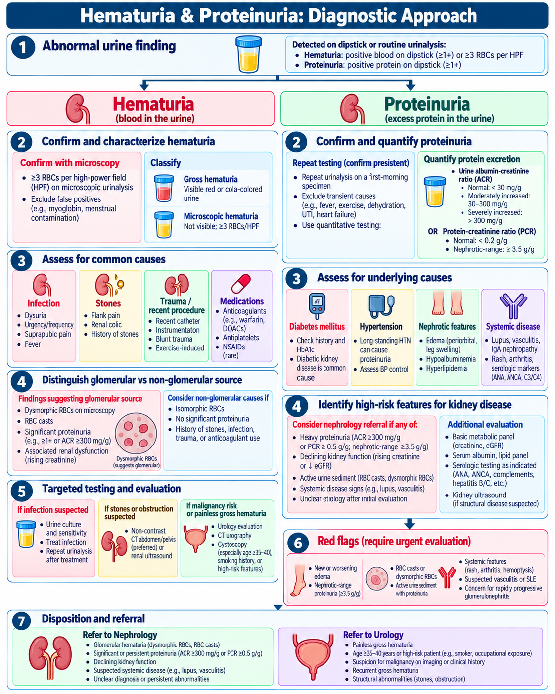
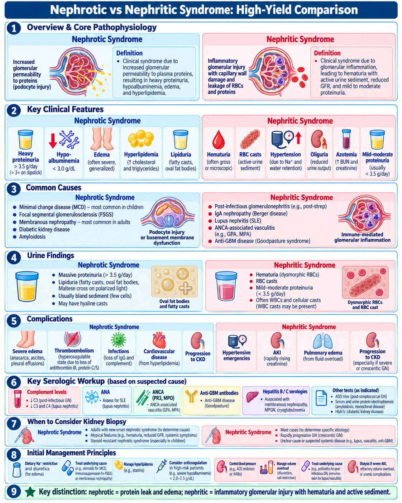
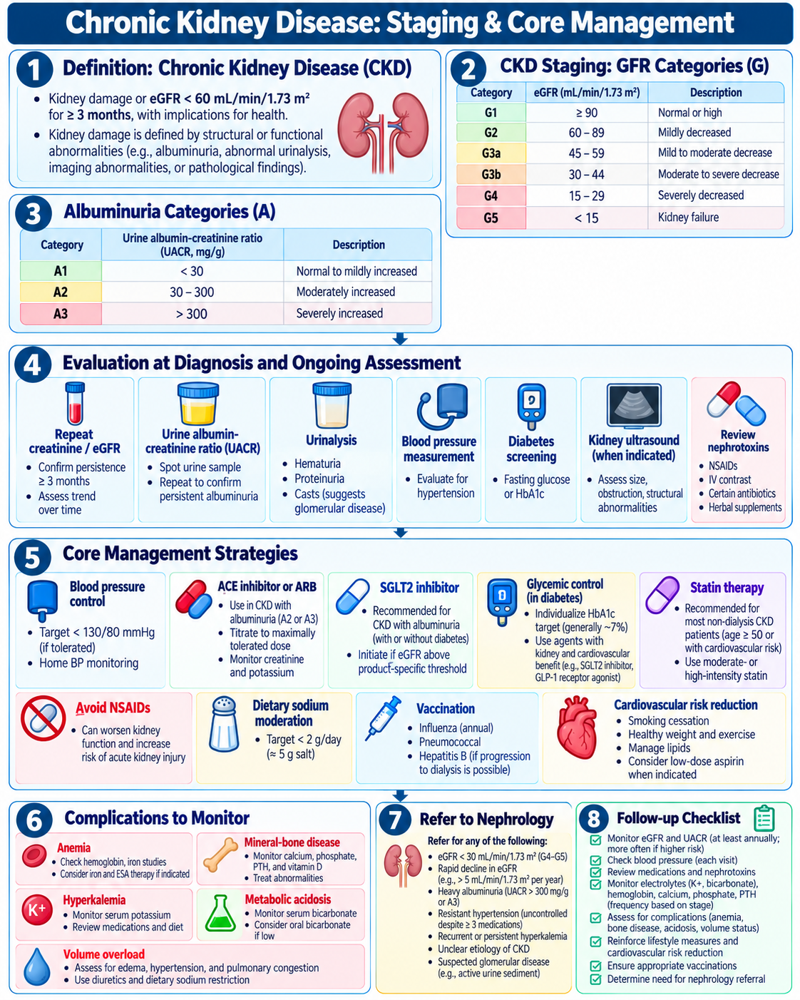
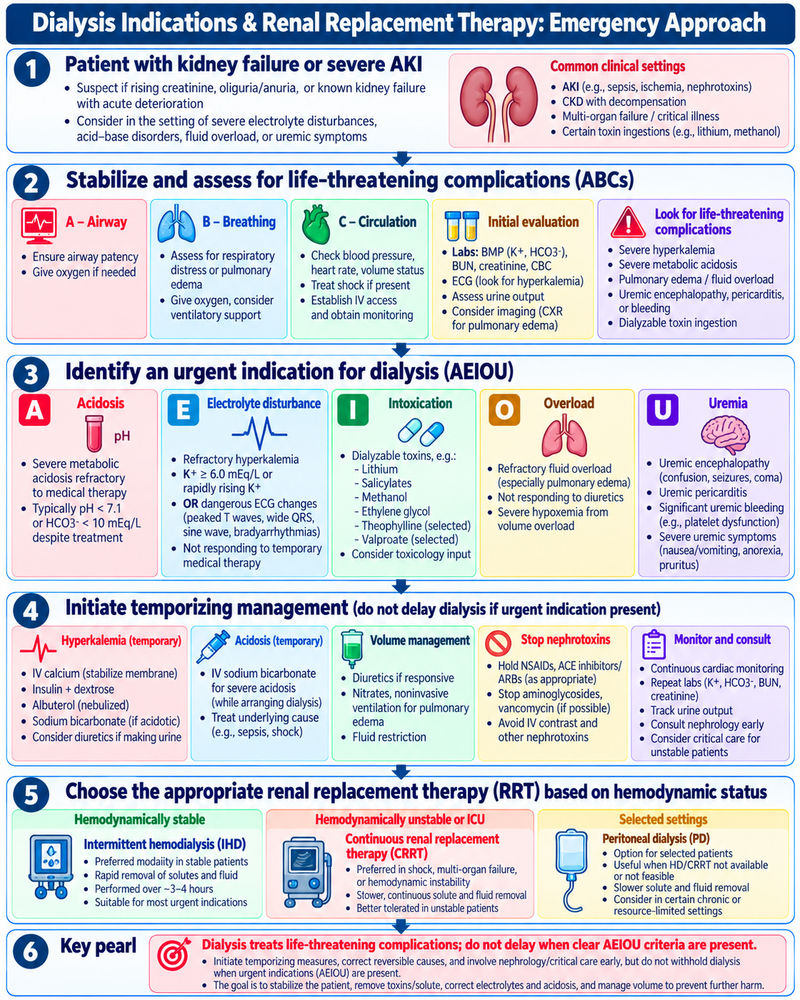
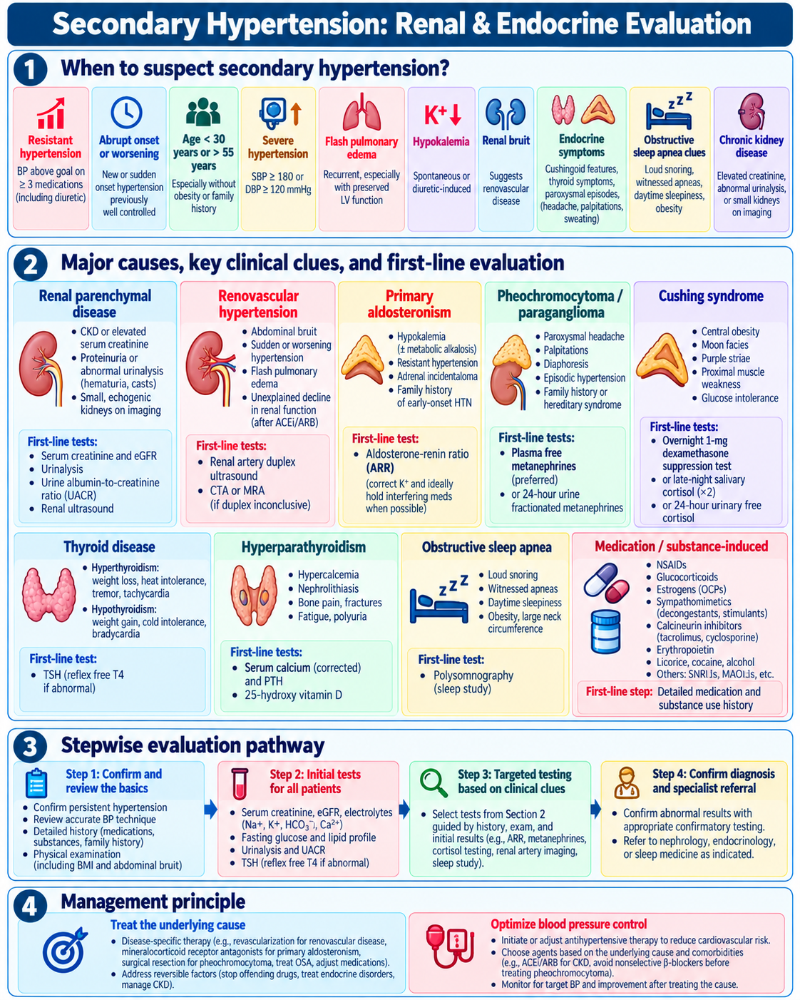

🫘 Renal Medicine
Physician-level approach to acute and chronic kidney disease, urine abnormalities, glomerular syndromes, dialysis decisions, and secondary hypertension.
80 questions
1. Acute Kidney Injury
Recognize AKI early, classify prerenal/intrinsic/postrenal causes, and correct reversible threats before they become dialysis emergencies.
Definition — KDIGO criteria
- Increase in serum creatinine ≥0.3 mg/dL within 48 h, or
- Increase to ≥1.5 × baseline within 7 days, or
- Urine output <0.5 mL/kg/h for ≥6 h.
Classify the mechanism
| Type | Classic causes | Clues |
|---|---|---|
| Prerenal | Hypovolemia, sepsis, low cardiac output, cirrhosis | Low perfusion; often bland sediment |
| Intrinsic | ATN, AIN, GN, vascular disease | Casts / active sediment depending on lesion |
| Postrenal | BPH, stones, pelvic mass, neurogenic bladder | Retention, hydronephrosis, elevated post-void residual |
Urine microscopy pearls
- Muddy brown granular casts → ATN.
- WBCs/WBC casts ± eosinophils → consider AIN.
- RBC casts + dysmorphic RBCs → glomerulonephritis.
Immediate workup
- Volume status, hemodynamics, medication review.
- BMP, urinalysis + microscopy, urine output trend.
- Renal ultrasound / bladder scan when obstruction is possible.
- Urine indices can support the diagnosis but should not override the clinical picture; diuretics reduce the usefulness of FENa.
Management priorities
- Treat shock/sepsis, restore perfusion when hypovolemic, relieve obstruction.
- Stop or dose-adjust nephrotoxins and renally cleared drugs.
- Do not give diuretics to “treat AKI” itself; use them for clinically significant volume overload.
- Track K⁺, bicarbonate, volume status and uremic complications.
Do not miss
Creatinine can lag behind the actual kidney injury. Falling urine output, rising potassium, acidosis or pulmonary edema may signal severe disease before creatinine becomes dramatic.
🧭 Acute Kidney Injury: Diagnostic Approach & Initial Management
Approved Day 8 visual
2. Hematuria & Proteinuria
Confirm the abnormality, decide whether the source is glomerular, and identify patients needing nephrology or urology evaluation.
Hematuria
- Microhematuria is confirmed by microscopy, not dipstick alone.
- Glomerular: dysmorphic RBCs, RBC casts, proteinuria, renal dysfunction.
- Non-glomerular: isomorphic RBCs; consider infection, stones, trauma, malignancy.
Proteinuria
- Quantify with urine albumin-creatinine ratio (UACR) or protein-creatinine ratio.
- Repeat unexpected/transient abnormalities after exercise, fever, dehydration or UTI resolves.
- Nephrotic-range proteinuria is roughly ≥3.5 g/day.
Risk-based hematuria evaluation
Current AUA guidance uses malignancy risk stratification. Intermediate-risk microhematuria generally warrants cystoscopy plus renal ultrasound; high-risk patients generally require cystoscopy plus axial upper-tract imaging.
Red flags
- Gross painless hematuria.
- RBC casts / dysmorphic RBCs.
- Heavy proteinuria or declining eGFR.
- Systemic features suggesting vasculitis or lupus.
Referral logic
Nephrology: glomerular pattern, significant albuminuria, active sediment, kidney-function decline. Urology: gross hematuria, malignancy risk, structural disease or recurrent non-glomerular bleeding.
🧭 Hematuria & Proteinuria: Diagnostic Approach
Approved Day 8 visual
3. Nephrotic vs Nephritic Syndrome
Use the urine sediment and protein burden to distinguish podocyte permeability disease from inflammatory glomerular injury.
Nephrotic syndrome
- Heavy proteinuria (classically >3.5 g/day).
- Hypoalbuminemia + edema.
- Hyperlipidemia and lipiduria / fatty casts.
- Complications: thrombosis, infection, edema, dyslipidemia.
Common nephrotic causes
- Minimal change disease.
- FSGS.
- Membranous nephropathy.
- Diabetic kidney disease.
- Amyloidosis.
Nephritic syndrome
- Hematuria with RBC casts / dysmorphic RBCs.
- Reduced GFR, oliguria, azotemia.
- Hypertension and edema.
- Proteinuria usually less than nephrotic range, though overlap occurs.
Common nephritic patterns
- IgA nephropathy.
- Post-infectious GN.
- Lupus nephritis.
- ANCA-associated vasculitis.
- Anti-GBM disease.
Memory line
Nephrotic = protein leak. Nephritic = inflammatory, bloody sediment.
🧭 Nephrotic vs Nephritic Syndrome
Approved Day 8 infographic
4. Glomerular Disease Patterns
Recognize high-yield clinical patterns and order targeted serologies rather than sending every test indiscriminately.
Pattern recognition
| Pattern | Classic clue |
|---|---|
| IgA nephropathy | Hematuria concurrent with or within days of URI |
| Post-infectious GN | Hematuria after infection + low C3 |
| ANCA vasculitis | Rapid GN + pulmonary/systemic small-vessel features |
| Anti-GBM disease | Pulmonary hemorrhage + rapidly progressive GN |
| Lupus nephritis | SLE features + proteinuria/active sediment + low complement |
Targeted serology
- C3/C4 when immune-complex disease suspected.
- ANA / anti-dsDNA for lupus pattern.
- ANCA for pauci-immune vasculitis.
- Anti-GBM antibodies for pulmonary-renal syndrome.
- HBV/HCV/HIV testing when clinically relevant.
Rapidly progressive GN
Rapid creatinine rise + active urine sediment is a nephrology emergency. Early biopsy is often needed to define the lesion and guide immunosuppression.
Complement shortcut
- Low complement: consider post-infectious GN, lupus, membranoproliferative patterns.
- Normal complement: IgA nephropathy, ANCA disease, anti-GBM are classic possibilities.
Biopsy
Consider kidney biopsy for unexplained nephrotic syndrome in adults, suspected rapidly progressive GN, significant proteinuria with active sediment, or when histology will alter treatment.
5. CKD Diagnosis & Staging
CKD is defined by persistent kidney damage or reduced kidney function for at least 3 months; classify by cause, GFR category and albuminuria category.
Definition
Kidney structural/functional abnormalities with health implications for ≥3 months, including eGFR <60 mL/min/1.73 m² or markers of kidney damage such as albuminuria.
GFR categories
| G | eGFR |
|---|---|
| G1 | ≥90 |
| G2 | 60–89 |
| G3a | 45–59 |
| G3b | 30–44 |
| G4 | 15–29 |
| G5 | <15 |
Albuminuria categories
| A | UACR |
|---|---|
| A1 | <30 mg/g |
| A2 | 30–300 mg/g |
| A3 | >300 mg/g |
Confirm chronicity
Repeat creatinine/eGFR and albuminuria when chronicity is uncertain. Do not label a single abnormal result as CKD without evidence of persistence or prior chronic structural disease.
Risk concept
Higher albuminuria and lower eGFR independently increase kidney-failure and cardiovascular risk. Use both rather than eGFR alone.
🧭 Chronic Kidney Disease: Staging & Core Management
Approved Day 8 infographic
6. CKD Complications & Management
Slow progression, reduce cardiovascular risk, adjust medications safely, and screen systematically for CKD complications.
Kidney-protective strategy
- Blood-pressure control and lifestyle measures.
- ACE inhibitor or ARB for appropriate albuminuric CKD; monitor creatinine and potassium.
- SGLT2 inhibitor therapy has a major role in eligible CKD patients, including many without diabetes.
- Optimize diabetes and cardiovascular risk management.
- Avoid unnecessary NSAIDs and nephrotoxins.
Medication stewardship
- Review eGFR for dose adjustment.
- Be cautious during acute illness, volume depletion and procedures.
- Reassess medications after AKI rather than permanently withholding useful therapies without indication.
Complications to monitor
- Anemia.
- Hyperkalemia.
- Metabolic acidosis.
- CKD-mineral and bone disorder.
- Volume overload and hypertension.
- Malnutrition / uremic symptoms in advanced disease.
Nephrology referral — common triggers
- eGFR <30 or rapid decline.
- Persistent A3 albuminuria / heavy proteinuria.
- Active urine sediment / suspected glomerular disease.
- Resistant hypertension, recurrent hyperkalemia, unclear etiology.
Exam trap
Dialysis is not started because creatinine is “high” alone. Start renal replacement therapy for clinical complications, refractory metabolic problems, symptoms, or kidney failure requiring it.
7. Dialysis & Renal Replacement Therapy
Know the urgent indications and choose the modality according to hemodynamic stability and clinical context.
AEIOU — urgent indications
- A — Acidosis: severe/refractory metabolic acidosis.
- E — Electrolytes: refractory or life-threatening hyperkalemia.
- I — Intoxications: selected dialyzable toxins.
- O — Overload: refractory pulmonary edema / fluid overload.
- U — Uremia: encephalopathy, pericarditis, significant bleeding or severe symptoms.
Dialyzable toxicology examples
Classic examples include lithium, methanol, ethylene glycol and salicylates; toxin-specific criteria matter, so involve toxicology/nephrology early.
Choose the modality
- Intermittent hemodialysis: rapid solute/fluid removal in hemodynamically stable patients.
- CRRT: often favored when severe hemodynamic instability makes rapid shifts poorly tolerated.
- Peritoneal dialysis: selected chronic/resource-limited contexts; slower solute/fluid removal.
Temporize but do not delay
Treat hyperkalemia, acidosis, shock and pulmonary edema while arranging dialysis, but do not allow temporary measures to postpone definitive RRT when a clear urgent indication persists.
🧭 Dialysis Indications & Renal Replacement Therapy
Approved Day 8 visual
8. Secondary Hypertension
Look for secondary causes when hypertension is unusually severe, resistant, abrupt, early-onset, or accompanied by suggestive biochemical or clinical clues.
When to suspect
- Resistant hypertension or sudden worsening.
- Very early onset or abrupt severe hypertension.
- Spontaneous/diuretic-induced hypokalemia.
- Renal dysfunction, asymmetric kidneys or renal bruit.
- Episodic headache/palpitations/diaphoresis.
- Obstructive sleep apnea clues.
Renal causes
- Renal parenchymal disease: creatinine/eGFR, urinalysis, UACR ± ultrasound.
- Renovascular disease: consider duplex ultrasound, CTA or MRA in selected patients.
Endocrine causes
- Primary aldosteronism: aldosterone + renin / ARR; potassium aids interpretation.
- Pheochromocytoma: plasma free or urine fractionated metanephrines.
- Cushing syndrome: appropriate cortisol screening test.
- Thyroid disease: TSH ± free T4.
2025 aldosteronism update
The Endocrine Society now suggests screening all people with hypertension for primary aldosteronism when feasible, using aldosterone and renin with ARR interpretation in clinical context.
Medication/substance review
NSAIDs, glucocorticoids, estrogen-containing contraceptives, sympathomimetics/stimulants, calcineurin inhibitors, erythropoietin, licorice, cocaine and excess alcohol can contribute.
🧭 Secondary Hypertension: Renal & Endocrine Evaluation
Approved Day 8 visual
🔥 Day 8 Rapid Review
Renal patterns and thresholds worth memorizing.
📈 Day 8 Progress
Your original-practice scores and external QBank block tracker are stored privately in this browser.